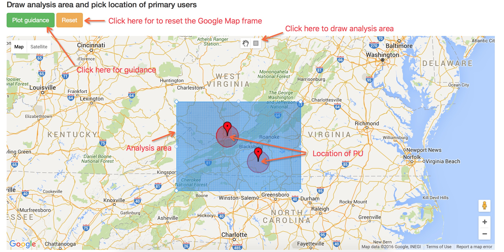
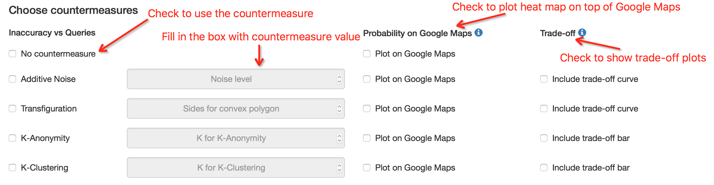

This page introduces the work that generates this demo and provides a step by step guidance to use the demo.
This demo is to introduce some of the idea from the paper:
Protecting the Primary Users’ Operational Privacy in Spectrum Sharing. [2014 IEEE International Symposium on Dynamic Spectrum Access Networks (DYSPAN), p 236-47, 2014]
Perhaps the abstraction of the paper provides a good overview for this demo as well.
Although using geolocation databases is a practical approach for enabling spectrum sharing, it poses a potentially serious privacy problem. Secondary users (queriers), through seemingly innocuous queries to the database, can determine the types and locations of incumbent systems operating in a given region of interest, and thus compromise the incumbents’ operational privacy. When the incumbent systems (primary users) are commercial systems, this is typically not a critical issue. However, if the incumbents are federal government systems, including military systems, then the information revealed by the databases can lead to a serious breach of operational privacy. In this paper, we propose privacy-preserving mechanisms and techniques for an obfuscated geolocation database that can enable the coexistence of primary and secondary users while preserving the operational privacy of the primary users.
This demo simulates these seemingly innocuous queries to the database, and shows that the operational privacy is compromised. Meanwhile it implements several privacy-preserving mechanisms and techniques, and shows that these techniques actually protect operational privacy from malicious attacks.
We have implemented 4 countermeasures mentioned in the paper. Here is a brief introduction for all of them that we quote from the paper. If you need more information about the countermeasures and their algorithms, they are well addressed in detail in the paper. These countermeasures are privacy-preserving techniques that can be used to counter inference attacks and preserve location privacy.
The perturbative masking method (a.k.a randomization method) is a technique for privacy-preserving databases that uses data distortion in order to mask the attribute values of records. In this method, we add sufficiently large noise to individual record values to prevent recovery of these values by an adversary. One key advantage of the randomization method is that it is relatively simple, and does not require knowledge of the distribution of other records in the data. Additive noise is the most basic perturbative method that can be used for privacy-preserving databases.
Another form of perturbation is to change the shape of the protected contour. Replacing the circular or non-circular protected contours with random shapes that envelop the actual protected contour will increase the location privacy of PUs.
The concept of k-anonymity was originally introduced in the context of relational data privacy. The motivating factor behind the k-anonymity model was the possibility of indirect identification of records from public databases via quasi-identifiers i.e., combination of multiple record attributes that can be used to identify individual records. For instance, a medical institution may want to release a table of medical records with the names of the individuals replaced with dummy identifiers. However, some set of attributes (which are referred to as the quasi-identifiers) can still lead to identity breaches. In the k-anonymity method, the granularity of data representation is reduced with the use of techniques such as generalization or suppression. In the context of location privacy of PUs in database-driven spectrum sharing, we can achieve location k-anonymity by combining protected contours of k PUs that are closest together, and creating a larger protected contour that works like the cloak box for Location-Based Services (LBSs). The SUs are not allowed to transmit in the area covered by this larger protected contour.
In this technique, instead of classifying PUs into groups of k users, we group them into k clusters. Instead of dividing PUs into groups of equal size, the algorithm divides them into k clusters of PUs that are closest to each other. These clusters may not be of equal size. The main disadvantage of k-clustering is that some PUs that are distant from other PUs may end up in a single cluster by itself. In other words, this method may provide unequal levels of location privacy to different PUs. This shortcoming can be addressed by using a hybrid approach that combines k-clustering with other privacy-preserving techniques such as perturbation with additive noise or transfiguration of protected contour.
Here we introduce the metric for location privacy defined by the paper. Its purpose is to measure quantitatively the effectiveness of a particular countermeasure. It is necessary because we need to compare between different countermeasures and different query methods. Here is how we define Inaccuracy, as a measurement of location privacy:
The implementation underlying the analysis area is matrix. Given the grid size specified by the user, the matrix has a certain number of rows and columns. Each cell in the matrix has a probability value p ranging from 0 to 1 associated with it. We use d to represent the distance between each cell to its closest primary user. Then we sum over the entire matrix:
Inaccuracy = Σ ( p * d )
Generally this value is greatest at the beginning and starts to drop as queries begin. Greater value indicates that the attacker's inference is more inaccurate whereas smaller values means the attacker is able to make a close guess about primary users locations.
We offer two types of query options in our demo. Random query is to randomly generate query location inside the analysis area. Each cell of the underlying matrix has the equal chance to be selected. We propose another query algorithm that makes query decision based on previous query results. It generally outperforms the random query, brings down inaccuracy very quickly and appears to be smarter. We provide pseudocode here to give you an idea about how the algorithm works.
This piece of pseudocode shows how to choose next query location wisely. We use next_loc to represent next query location, p(loc) to represent the probability for the presence of PU in that location, re to represent four possible responses, check out the MTP function in our Step by Step Guidance section.
initialize next_loc
for loc in all locations on the map:
if loc was chosen before:
continue
exp_ic = 0 // if we query at loc, what is the expected inaccuracy?
for pu_loc in all locations on the map:
if p(pu_loc) == 0: // we know for sure that location doesn't have a PU
continue
for re in all possible responses:
update map around loc based on re
ic = compute ic assuming PU is at pu_loc
exp_ic += ic * 1 / 4 * p(pu_loc)
next_loc = min (next_loc, exp_ic) // find the location with minimum expected inaccuracy
mark loc associated with next_loc as chosen
query at next_loc
First, select number of channels with the dropdown button. This will specify the number of channels that the simulation will operate on. We have provided three options, you can choose to use either one, two or three channels for the simulation.
Then you need to specify grid size with the dropdown button. We implemented our map in terms of the matrix. By specifying grid size here you are actually specifying granularity of the matrix. For now we have provided three options: 0.5 km, 1 km and 5 km. For a certain area, smaller grid size means a more fine-grained underlying matrix, and more computation needed as well.
You can modify the MPT parameters if you want, although the default settings would work just fine. When you do so be sure to notice that these values are actually radius of protection zones. They need to be positive numbers and in increasing order.
The next thing you need to do is to specify analysis area and primary users distribution for the simulation. Here are the buttons that you will find helpful:
This button provides simple instructions to use Google Map frame. Introduces MTP function used in our demo.
This button reset Google Map frame to its original state.
If you choose more than one channel for the simulation, this button will appear, indicating which channel you are choosing primary users for.
Here are the rules to interact with the Google Map:
Use the button in the upper middle area of the Google Map frame to draw a rectangle on the map. This region covered by this rectangle is the area of analysis.
By clicking on the map, a location will be marked with a circle centered at that location. The marker indicates the location of the primary user. The circle indicates the circular protection zone of the primary user.
You can either plot analysis area first or specifying markers first. But once you have analysis area ready, you must select location of primary users inside the region. Once you have markers ready, you must draw an analysis area that covers all the primary Users.
The circle of each marker has radius of 25 km. It represents the greatest protecting zone of primary user. In our demo, default MTP function is defined as below:
Let d be the distance between attacker and primary user. R is the full transmit power available, r is the actual transmit power that attacker can use.
r = 0 if d ≤ 8 km
r = 0.5 R if 8 < d ≤ 14 km
r = 0.75 R if 14 < d ≤ 25 km
r = R if d > 25 km
This means if the distance between attacker and primary user is less than 8 km, the transmit power that primary user can provide is 0. If this distance is greater than 8 but less than 14 km, the transmit power available transmit power would be 50 % of full power. If the distance is between 14 km to 25 km, the available transmit power would be 75 %. Otherwise the attacker can have the full transmit power. We give uses the option to modify these MTP parameters.
Here is the screenshot that reviews major elements you need to know to interact with the Google Map.
Once you have set up above parameters, the simulation is actually good to go. It is a good time to specify which countermeasure to use. We have implemented four countermeasures:
If you don't select any of them, the simulation will go with no countermeasure. For each countermeasure you select, you also need to specify countermeasure value. These values can be very different based on the nature of countermeasures.
On the right part of the section you can check the Plot on Google Maps option to project probability heat map on top of the Google Map. You can also check the Include trade-off option to show the comparison between different countermeasure values for a particular countermeasure.
Here is the screenshot that reviews major elements you need to know to specify countermeasures.
The final step is to specify method of queries and the number of queries for the simulation. Generally more queries require more time to compute but give more accurate result.
We have implemented two methods of query:
Our smart query algorithm is quite computationally demanding, expect a long time for it to finish.
Don't forget to fill in your email address so that we can send you the simulation results to you via email.
We will send you the simulation results via email. Based on your configuration some simulation cases can take a long time to finish. The email is based on Amazon Simple Email Service and sometimes can be classified as spam incorrectly, so please check your spam emails if you don't receive the results for a long time. You can check our examples for further information regarding results.